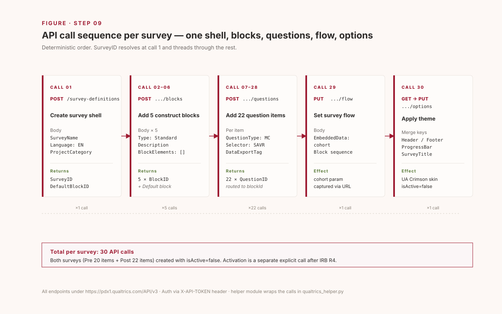

Part 1
General build pattern
Seven steps that work for any Qualtrics project on any institution-tier brand. The Python helper is project-agnostic; only wording and block composition change between projects.
Step 01 Auth & capability prerequisite
The Qualtrics v3 REST API exposes everything a research pipeline needs: survey-definition CRUD, blocks, questions, flow, options, distributions, response export. Auth is a single header.
Where to get the token
- Log in to your institution's Qualtrics → Account Settings → Qualtrics IDs.
- Copy the API token (40-char string) and the Datacenter ID (e.g.
pdx1,iad1,fra1,ca1,az1). - Save the token to a local file outside any version-controlled directory.
Verify before doing anything destructive
PowerShell · whoami probe$token = "<your 40-char token>"
$dc = "pdx1" # your datacenter
Invoke-RestMethod `
-Uri "https://$dc.qualtrics.com/API/v3/whoami" `
-Headers @{"X-API-TOKEN" = $token}
ResultbrandId : your-brand
userId : UR_xxxxxxxxxxxxxxx
userName : your-username#your-brand
firstName : ...
datacenter : ...
pdx1);
whoami may return another (az1). Both route. Use
the IDs-page value for consistency.
Step 02 Reusable helper module DRY
Wrap the API in a small Python class so every project shares the same auth, error handling, and payload shape. The same helper drives every subsequent step.
qualtrics_helper.py · core classimport json, requests
from pathlib import Path
class Qualtrics:
def __init__(self, token, datacenter="pdx1"):
self.token = token
self.base = f"https://{datacenter}.qualtrics.com/API/v3"
self.headers = {"X-API-TOKEN": token, "Content-Type": "application/json"}
def _req(self, method, path, **kw):
r = requests.request(method, f"{self.base}{path}",
headers=self.headers, timeout=30, **kw)
data = r.json()
if r.status_code >= 400:
raise RuntimeError(f"{method} {path} -> {r.status_code}: "
f"{json.dumps(data)[:600]}")
return data
def whoami(self):
return self._req("GET", "/whoami")["result"]
def create_survey(self, name, language="EN", category="CORE"):
body = {"SurveyName": name, "Language": language,
"ProjectCategory": category}
return self._req("POST", "/survey-definitions", json=body)["result"]
def add_block(self, survey_id, description, block_type="Standard"):
body = {"Type": block_type, "Description": description, "BlockElements": []}
return self._req("POST", f"/survey-definitions/{survey_id}/blocks",
json=body)["result"]["BlockID"]
def add_question(self, survey_id, payload, block_id=None):
params = {"blockId": block_id} if block_id else None
return self._req("POST", f"/survey-definitions/{survey_id}/questions",
params=params, json=payload)["result"]["QuestionID"]
def get_survey(self, survey_id):
return self._req("GET", f"/survey-definitions/{survey_id}")["result"]
def set_flow(self, survey_id, flow):
return self._req("PUT", f"/survey-definitions/{survey_id}/flow",
json=flow)
def set_active(self, survey_id, active):
return self._req("PUT", f"/surveys/{survey_id}",
json={"isActive": active})
One file, one class, every endpoint that matters. Add payload builders
(likert_agree, mc_single, text_entry,
…) as separate top-level functions so wording lives away from the
HTTP plumbing.
Step 03 Create an empty survey shell first POST
Every survey starts the same way: a single POST that returns the
SurveyID and a DefaultBlockID. Save both —
they thread through every subsequent call.
Pythonc = Qualtrics(token=TOKEN, datacenter="pdx1")
sv = c.create_survey("My Project — Pre-Program Survey", language="EN")
survey_id = sv["SurveyID"] # SV_xxxxxxxxxxxxxxx
default_block = sv["DefaultBlockID"] # BL_xxxxxxxxxxxxxxx
The shell is automatically created with isActive=false.
Activation is a separate explicit call (Step 07).
Browse to your Qualtrics UI → Projects and the empty shell appears
immediately.
Step 04 Add blocks & questions bulk POSTs
Two endpoint families:
| Endpoint | What it does |
|---|---|
| POST /survey-definitions/{id}/blocks | Adds a new block. Returns BlockID. |
| POST /survey-definitions/{id}/questions?blockId=… | Adds one question to a block. Returns QuestionID. |
Question payload shape
Every question type follows the same skeleton. QuestionType
+ Selector + SubSelector determines the rendered
input control.
Python · 5-point agree-Likert helperdef likert_agree(text, tag, force=True):
return {
"QuestionText": text,
"DataExportTag": tag,
"QuestionType": "MC",
"Selector": "SAVR", # Single Answer Vertical Radio
"SubSelector": "TX",
"Configuration": {"QuestionDescriptionOption": "UseText"},
"Choices": {
"1": {"Display": "Strongly disagree"},
"2": {"Display": "Disagree"},
"3": {"Display": "Neither agree nor disagree"},
"4": {"Display": "Agree"},
"5": {"Display": "Strongly agree"},
},
"ChoiceOrder": ["1","2","3","4","5"],
"Validation": {"Settings": {"ForceResponse": "ON" if force else "OFF",
"Type": "None"}},
"Language": [],
}
Common type matrix
| Control | QuestionType | Selector | SubSelector |
|---|---|---|---|
| Single-answer MC (vertical radio) | MC | SAVR | TX |
| Multi-select MC | MC | MAVR | TX |
| Single-line text entry | TE | SL | — |
| Multi-line text entry | TE | ML | — |
| Likert matrix | Matrix | Likert | SingleAnswer |
| Slider | Slider | HSLIDER | — |
| Descriptive text (no input) | DB | TB | — |
GET /survey-definitions/{id}, copy the resulting JSON
payload verbatim, and parameterize the wording. Authoring those payloads
from scratch fails in subtle ways (e.g. validation schema mismatches).
Bulk add with the helper
Python · build a block of itemsb = c.add_block(survey_id, "Block 1 — usability")
items = [
("This system meets my requirements.", "USAB_1_meets"),
("This system is easy to use.", "USAB_2_easy"),
("Using this system is a frustrating experience.", "USAB_3_frust_R"),
("I have to spend too much time correcting things.", "USAB_4_correct_R"),
]
for text, tag in items:
c.add_question(survey_id, likert_agree(text, tag), block_id=b)

SurveyID resolves at
call 1 and threads through everything that follows; each block returns a
BlockID that scopes its questions; flow and options are PUTs
that close out the build.Step 05 Survey flow & EmbeddedData routing & cohort tags
Survey flow controls block order and lets you capture URL parameters
(?cohort=…, ?wave=…) into responses.
A flow PUT replaces the entire flow tree.
Python · flow with cohort EmbeddedDatadef cohort_flow(default_block, extra_blocks):
flow = [
{"Type": "EmbeddedData", "FlowID": "FL_ED",
"EmbeddedData": [{
"Description": "cohort", "Type": "Recipient",
"Field": "cohort", "VariableType": "String",
"DataVisibility": [], "AnalyzeText": False}]},
{"Type": "Block", "ID": default_block, "FlowID": "FL_BLK_0"},
]
for i, bid in enumerate(extra_blocks, start=1):
flow.append({"Type": "Block", "ID": bid, "FlowID": f"FL_BLK_{i}"})
return {"Type": "Root", "FlowID": "FL_ROOT",
"Properties": {"Count": len(flow) + 1}, "Flow": flow}
c.set_flow(survey_id, cohort_flow(default_block, [b1, b2, b3]))
Distribution link form:
https://<dc>.qualtrics.com/jfe/form/SV_xxx?cohort=2026-spring.
The value lands in exported responses next to item answers.
Branching by response
Add a Branch element with a BranchLogic
expression. Editing branch JSON by hand is brittle — build the branch
in the UI first, GET the flow, copy the structure.
Python · branch shape (sketch){"Type": "Branch", "FlowID": "FL_BR",
"BranchLogic": {
"0": {"0": {"LogicType": "Question", "QuestionID": "QID1",
"Operator": "GreaterThanOrEqualTo", "RightOperand": "4",
"Type": "Expression"}, "Type": "If"},
"Type": "BooleanExpression"},
"Flow": [{"Type": "Block", "ID": follow_up_block, "FlowID": "FL_BR_BLK"}]}
Step 06 Theme & options branding
The options endpoint controls progress bar, back button,
ballot-box prevention, header / footer HTML, and survey-level title /
metadescription. Custom CSS goes inline inside the Header
HTML via a <style> tag.
PUT /options is full-replace, not partial.
Forgetting to GET first drops SurveyProtection,
PartialData, and other required keys, and the request 400s.
Always GET → merge → PUT.
Python · idempotent themerdef apply_theme(c, survey_id, *, accent="#9E1B32",
title="My Project Survey",
header_html, footer_html):
current = c._req("GET", f"/survey-definitions/{survey_id}/options")["result"]
overrides = {
"BackButton": "true",
"SaveAndContinue": "true",
"BallotBoxStuffingPrevention": "true",
"ProgressBarDisplay": "VerboseText",
"Header": header_html,
"Footer": footer_html,
"SurveyTitle": title,
}
merged = {**current, **overrides}
c._req("PUT", f"/survey-definitions/{survey_id}/options", json=merged)
For visual styling beyond progress bar / buttons, embed a
<style> block at the top of header_html:
Header HTML · inline style override<style>
body, .Skin { font-family: 'Inter', system-ui, sans-serif !important; }
.Skin .ButtonNext, .Skin .ButtonSubmit {
background: #9E1B32 !important; border-color: #9E1B32 !important;
border-radius: 4px !important;
}
.Skin .ProgressBarFill { background: #9E1B32 !important; }
.Skin .QuestionOuter:hover { background: #fbf7f8 !important; }
</style>
<div style="border-left: 4px solid #9E1B32; padding: 8px 0 8px 14px;">
<div style="font-size: 11px; font-weight: 700;
text-transform: uppercase; color: #9E1B32;">Project Name</div>
<div style="color: #555; font-size: 14px;">Subtitle here</div>
</div>

Step 07 Activate, distribute, export life-cycle
Activate
Until activated, no responses are accepted even if the link is shared. Activation is a separate explicit call — intentional, because it implies the instrument is IRB / governance approved.
Pythonc.set_active(survey_id, True)
Distribute
Two patterns: anonymous link (no participant identification) or individual email link (uses a Qualtrics mailing list).
Python · anonymous link with cohort tagdist = {
"surveyId": survey_id,
"linkType": "Anonymous",
"description": "My Project — anonymous link",
"action": "CreateDistribution",
"expirationDate": "2026-12-31T23:59:59Z",
}
print(c._req("POST", "/distributions", json=dist))
# returns the anonymous link; append ?cohort=<tag> for cohort capture
Export responses
Async — start, poll, download zip, extract.
Python · response export patternimport time, io, zipfile
prog = c._req("POST", f"/surveys/{survey_id}/export-responses",
json={"format": "csv"})["result"]["progressId"]
while True:
s = c._req("GET", f"/surveys/{survey_id}/export-responses/{prog}")["result"]
if s["status"] == "complete": break
if s["status"] == "failed": raise RuntimeError(s)
time.sleep(2)
raw = c._req("GET",
f"/surveys/{survey_id}/export-responses/{s['fileId']}/file")
zipfile.ZipFile(io.BytesIO(raw)).extractall("./responses/")
The exported CSV preserves DataExportTag column names —
your tag scheme from Step 04 maps directly to analyzable columns.
Part 2 · Case study
TeachPlay perception × efficacy survey
The general pattern from Part 1 applied to a real research project: a 12-session AI-enhanced game-design microcredential at the University of Alabama. Twenty-two items in the Post survey, twenty in the Pre, paired by an anonymous self-generated code.
Case 01 Project recon context first
Before designing instruments, read the project. The TeachPlay handbook
(teachplay.dev) already emits in-app pre/post 8-skill
self-assessment, exit tickets, a 25-criterion rubric, Cohen's κ
panel, and a completion funnel. The Qualtrics layer should cover only
what those instruments don't.
- Vault entity pages (
AI Microcredential GameDesign,ACHE Microcredential,IRB Studies Portfolio). - Repo at
Desktop\_projects\TeachPlay— static HTML/JS, Cloudflare Pages, D1 SQLite, OBv3 / VC2.0 / CLR2.0 / xAPI. - L3 evaluation plan: EQ1–EQ5 named, instruments wired vs. still-to-build listed.
- IRB
HRP-503aR3 active; consentHRP-502R4.
Case 02 Field-gap mapping → constructs research design
The 4-way intersection — microcredential × teacher PD × AI in education × game-design pedagogy — has a chronic short list of what published evaluations rarely measure. We deliberately stay in that zone.
| Construct | Why a gap | Short form |
|---|---|---|
| Usability (program-level) | SUS-10 too generic; 3-surface app needs targeted measure | UMUX (Lewis 2013) |
| AI-use self-efficacy | TeachPlay is AI; existing self-assess covers design only | Bandura task-specific + Wang 2023 |
| Credential value (signal/social/economic) | Microcredential lit's chronic gap | Phillips & Cohen 2023 MVS |
| Designer identity + agency | Game-design pedagogy outcome rarely measured in PD | Kafai & Fields 2018 |
| Teaching efficacy contagion | "My students will engage with what I designed" rarely captured | TSES adapted |

Case 03 22-item budget under reliability measurement
Hard constraint: keep Cronbach's α / McDonald's ω estimable, paired-Δ valid, and the survey under ~6 minutes. Rule: every construct ≥ 3 items (Hair 2019); validated short forms only.

Case 04 Demographics & IRB compliance
Anonymous demographics in the Pre — minimum needed for EQ3 (equity) subgroup analysis, with no PII collected. Pre/Post pairing handled by a self-generated 4-character code (Mavros 2018).
| Field | Type | Note |
|---|---|---|
| D0 matching code | 4-char text | self-rule (e.g. mother first letter + birth month + favorite color) |
| D1–D6 demographics | MC single/multi | profession / grade level / gender / subject / years / institution; all with "Prefer not to say" |
| D7 race/ethnicity | opt-in multi | IPEDS, default unselected, n ≥ 10 cell rule on reporting |
IRB protocol mapping
Before any API calls, confirm the active IRB protocol authorizes each instrument. Extract the .docx body (zip + XML) and check item-by-item.
Python · zip+XML protocol extraction (no python-docx needed)import zipfile, xml.etree.ElementTree as ET
NS = '{http://schemas.openxmlformats.org/wordprocessingml/2006/main}'
z = zipfile.ZipFile('HRP-503a_R3.docx')
root = ET.fromstring(z.read('word/document.xml'))
for p in root.iter(NS + 'p'):
print(''.join(t.text or '' for t in p.iter(NS + 't')))
R3 mapping result✓ Pre/post project surveys (UA Qualtrics) · confidence in AI tool use
✓ Demographic survey
✓ Usability logs / structured rubric
△ H4 "perceived effectiveness for classroom-relevant gamelets"
✗ Credential value perception (NOT named)
✗ Designer identity (NOT named)
isActive=false
until R4 amendment is filed for Credential Value + Designer Identity (and
Teaching Efficacy Contagion is named explicitly).
Case 05 Outcome & handoff what's left
Two surveys, themed UA Crimson, paired by anonymous code, sitting inactive in UA Qualtrics waiting for IRB sign-off.
| Role | SurveyID | Items | Status |
|---|---|---|---|
| Pre-Program | SV_9QtpyWbqTypaFls | 20 | Inactive |
| Post-Program | SV_39sdRK7OVJvSiPk | 22 | Inactive |
| Action | Owner | When |
|---|---|---|
| UI preview (desktop + mobile) | PI | Now |
| R4 amendment: Credential Value + Designer Identity (+ name TSE Contagion) | PI | Before activation |
set_active(sv, True) | PI | After R4 approval |
Cohort link: ?cohort=2026-spring | PI | At cohort enrollment |
| Cohort 1 close → export → α + paired d_z | RA + PI | +30 days |
| Cohort 2–3 pool (N ≥ 150) → CFA on Credential Value 3-factor | PI | Year 2 |

Files in this case study
| Path | Role |
|---|---|
| eval/qualtrics_helper.py | API client + payload builders + theme |
| eval/instruments.py | All wording + tags (the editable surface) |
| eval/build_surveys.py | Entry point: post / pre / both / verify |
| eval/apply_theme.py | Idempotent themer (GET-merge-PUT) |
| eval/_created_surveys.json | SurveyIDs + block IDs (generated) |
| eval/README.md | Operator reference (denser cousin of this guide) |
Two failure modes worth remembering
numeric_entry400 — Qualtrics'ValidNumberschema rejects what looks like a clean payload. Workaround: bucketedmc_single. To fix properly, build a UI survey with the validation you want, GET/survey-definitions/{id}, copy the Validation block verbatim.DELETE /surveys/{id}denied by tooling without explicit user authorization. Plan for it: don't create throwaway shells through the API. If you do, clean up in the UI.